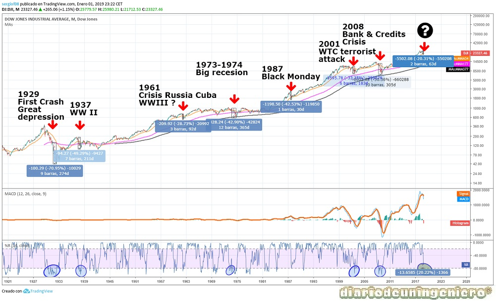
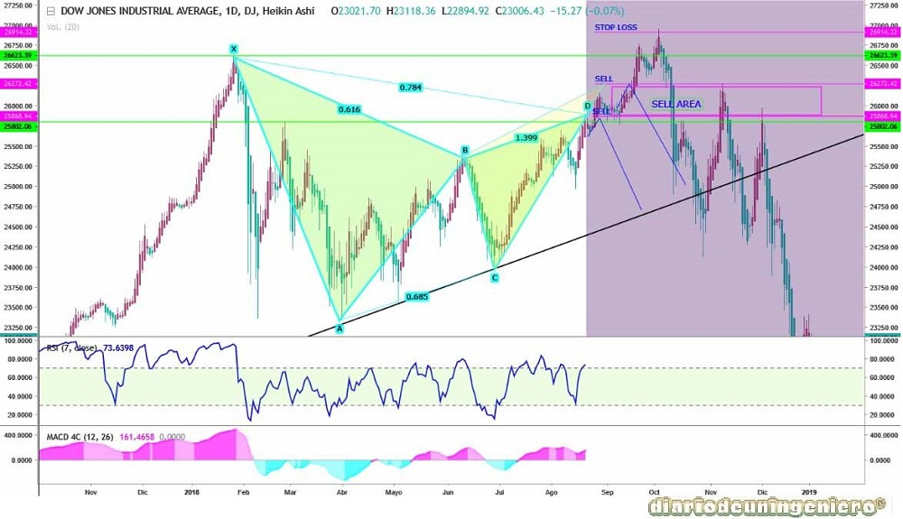
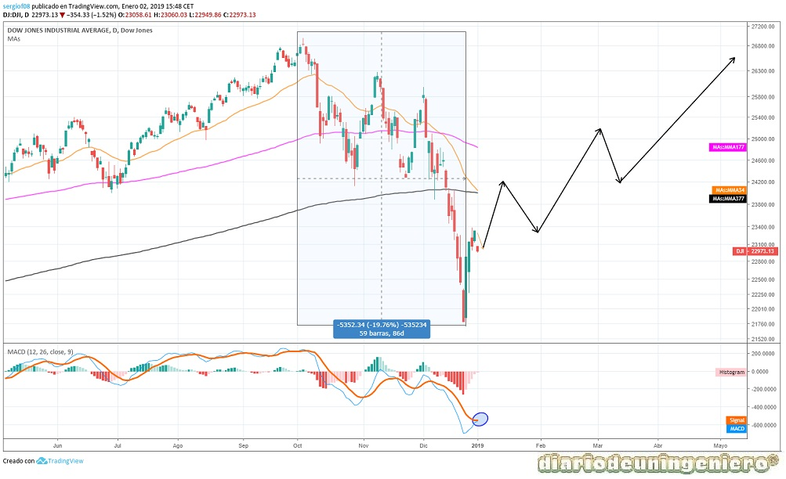
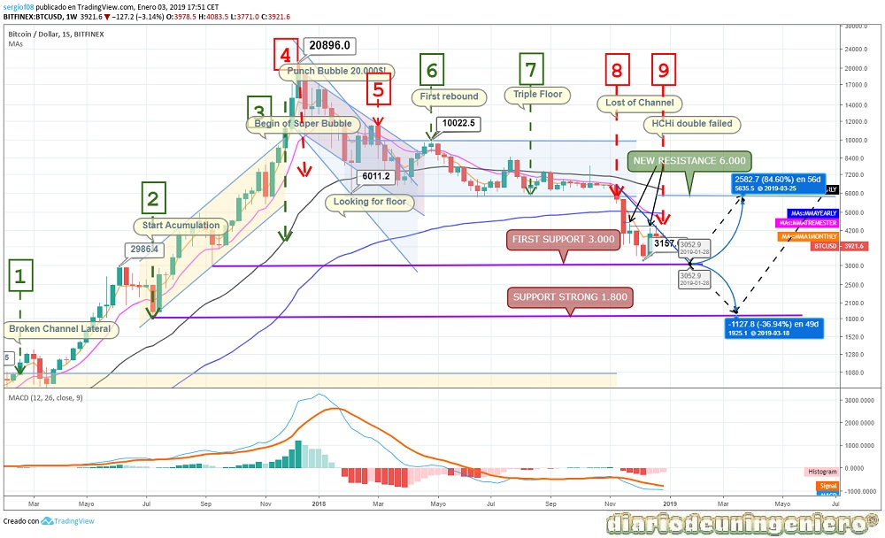

Este año comenzó con muy buen pie con el compromiso de una reunión entre las dos coreas que marcarían el principio del fin de las hostilidades. Esto rebajaría las tensiones en los mercados, debido a que junto a las tensiones comerciales con china arrastrarían a los índices americanos a la primera bajada importante desde la gran subida experimentada desde 2016. Y es que frente a la subida paulatina y suave tras la recuperación de la crisis de 2008 empezó a haber una agresiva especulación debido en parte a la confianza en la economía y el empleo y al comienzo de las subidas de tipos de interés por parte de la reserva federal.
Así pues en Febrero el Dow Jones por ejemplo retrocedería desde los 26.000 puntos a los 23.000 puntos. Una corrección de casi el 15% que pondría nervioso a los mercados. La ambigüedad de Trump frente a los aranceles a China sería también gran parte del problema que no llegaría a zanjarse hasta unos meses después. Una vez moderado las declaraciones y haber ya dado por resulta la crisis con Corea los indices comenzarían a la tónica habitual.
Se llegaría a superar el anterior máximo en el Dow Jones llegando próximo a los 27.000 puntos y en el resto de indices hasta que en Octubre debido a declaraciones negativas acerca de los tipos de interés y a resultados peores de lo esperado se volviera a retroceder de nuevo. Esto sería tomado con una simple corrección pero en Diciembre empezaría las verdaderas caídas que han supuesto la primera gran correción y posible aviso a navegantes .
Y es que si repasamos todas las caídas grandes del indice de referencia de Estados Unidos, el Dow Jones, observamos como en esta corrección se ha dejado casi el 20%. Si observamos en todas las crisis grandes el indicador Williams ha bajado por debajo de 80 y aún le queda un trecho para que llegue a bajar de ahí. Por lo que sería un prolegomeno de lo que puede llegar en 1 o 2 años. Si nos fijamos podría ser algo parecido a lo que paso en 1995 o justo en las elecciones cuando el Brexit o la victoria de Trump que dejan ciertos avisos o miedo de los mercados.
Si nos fijamos también en las medias móviles vemos como la medias móvil de 377 períodos (377 meses, 34 años), la línea negra, jamás la ha perdido. Sin embargo cuando pierde la linea purpura de 177 períodos, la de 15 años es cuando indica crisis grave y bajadas de más del 30%. Esto nos puede dar una gran pista para saber donde comprar tras una crisis financiera global.

En el siguiente gráfico muestro el patrón Gartley que ha realizado este año donde el trader WMarcosChoqueRojas ya informaba del mismo este verano. Al perder la línea de tendencia alcista de medio plazo llegaría la gran caída. En este caso perderíamos la línea amarilla de la media móvil de 3 años.

En el siguiente gráfico muestro lo que creo que sucederá los próximos meses. Esto es un rebote a corto plazo en el que podría formarse una figura HCHi (Hombre Cabeza Hombro invertido), en los siguientes meses respecto a alguno de las resistencias como son los 23.000, 25.000 o 26.000 puntos. Queda por saber que es lo que hará finalmente si rebasará máximos y cuando.
A mi modo de ver la gran crisis por salida de inversores se podría producir en los 30.000, cifra mágica que eche a mucha gente para atrás y solo por el número podría suponer un antes y un después pese a la bonanza de los buenos números de la economía americana.

Como hemos indicado el hecho más remarcable con respecto al 2018 ha sido el fin de las hostilidades con Corea del Norte. Esto ha tenido repercusiones en toda la esfera económica desde el cambio de divisas al precio del oro muy ligado a las grandes amenazas para la economía. Primeramente se reunirían en los Juegos de Invierno la hermana del líder Norcoreano con uno de los mandatarios de Corea del Sur y más tarde sería el propio líder Kim Jun Il el que lo haría con Trump. Desde entonces las apariciones de Corea en las noticias de todo el mundo han sido menores. El punto clave se vería en el gran desfile militar del año pasado donde la ostentación militar y la vista de cabezas o lanzadores de misiles sería mínima.
A continuación podremos observar el gráfico de la cotización del oro donde se ve las diferentes fases de subida y bajada de los tres últimos años. En todas coinciden las subidas con la llegada del otoño o el invierno y el comienzo de bajadas desde que inicia la primavera y se prevén los comienzos con unos cruces de medias abismales y unos indicadores en sobrecompra y sobreventa grandes. Ya poco importan las subidas de tipos al patrón oro que esta en una etapa lateral indefinida.
Tras cruzarse las medias móviles y haber tocado mínimos cerca de 1180 con una sobreventa aplastante ha comenzado a recuperar.
Esto ya viene siendo un clásico, totalmente estacional para estas épocas. Se prevee una posible caída antes de los 1300 $ con bajadas hasta el entorno de los 1260$ donde podría subir a hacer máximos entorno los 1340$. Esto seguramente será entre Marzo y Mayo y de ahí de nuevo figura de vuelta.
Ahora mismo no hay ninguna amenaza patente, y es mucho más seguro entrar en corto una vez se alcancen esos máximos que ahora mismo.
Además se ve en el indicador de acumulación distribución que cada cruce conlleva cambios, sobre todo en los ascendentes del oro que son más claros.
Las resistencias se encontrarían en 1300$ y 1340$ y los soportes en 1260$ y 1230$.
En Marzo de 2018 llegarían unas de las más duras batallas comerciales que se recuerden entre Estados Unidos y China, tras llevar la guerra comercial a los hechos. Tras subir aranceles a materias primas como el aluminio o el acero, China respondería poniendo aranceles a la soja de la cual Estados Unidos exporta una gran cantidad. A partir de ahí Estados Unidos subiría el monto de impuestos sobre las importaciones chinas a 500.000 millones. A esto china contraatacaría más tarde con aranceles a más de 300 productos americanos en industrias clave como tecnología, motor, industria y agricultura. Estados Unidos subiría el monto a 1.000 millones pero no han sido aplicado ninguna de estas medidas. De modo que una vez acabada las acusaciones de unos y otros en la siguiente cumbre entre los dos países se suavizaría el tono y se eliminarían gran parte de estas propuestas.
Debido a que a Estados Unidos le beneficia una divisa barata, la guerra se trasladaría a las divisas donde por la propia inercia comercial debido a los ajustes el dólar se encarecería y China para socavar más esto intentaría devaluar el Yuan. Al devaluar el Yuan por mucho que Estados Unidos subiese aranceles al ser en Yuanes seguirían siendo bajos los precios en destino, conduciendo a que el objetivo que no es otro que evitar la entrada de productos chinos se viese menos afectada.
Tras varios ataques en los medios los dos países irían hacia el dialogo y intentarían suavizar las medidas para contentar a los sectores afectados por los bajos precios Chinos y al mismo tiempo no disgustar a China.
En el siguiente gráfico se puede observar el cambio de divisa entre el EURO y el DOLAR y como a partir de Mayo el mercado comenzaría a revalorizar el dólar ante una vuelta al sentido común. Poco a poco ha ido formando un canal bajista frente al euro con un soporte en los 1.13$ por euro. Poco a poco el sentimiento de mercado ha cambiado en favor del dolar y este comenzará a revalorizarse hasta que empiece a hablarse con mas concreción acerca de la subida de tipos en la zona EURO. Previsiblemente no sera antes de Marzo de 2020 por lo que se espera que este año pueda llegar cerca a la paridad con el dólar. Tras tocar los 1.08 podría ir volver a rebotar hacia la zona que hoy es soporte, los 1.13 y de nuevo caer hacia los 1.06. Recordemos que el máximo histórico del cambio ha llegado a estar en los 1.03 y es muy difícil de que vuelva a superarse.
Este año también sería un año turbulento en la política española. Tras las elecciones en 2015 y 2016 donde el partido en el Gobierno no contaba con apoyos suficientes y tenía que ir mendigando los apoyos se conseguiría aún sobrepasar ese umbral. Gracias a una moción de censura, que contaba con el visto bueno de la mayoría de grupos y que en encuestas le daban la razón para desalojar del gobierno a M. Rajoy, Pedro Sánchez sería nombrado presidente de España. Si bien, la mayoría de la gente estaba de acuerdo con echar a M. Rajoy también lo estaban con convocar elecciones en el plazo de 6 meses. Así con esta jugada Pedro Sánchez batiría el récord de M. Rajoy gobernando con menos de 100 diputados y con el apoyo con condiciones de independentistas, la extrema izquierda y diputados regionalistas en busca de subvenciones. Esta escena de venir a salvar al pueblo del opresor y luego ser el propio opresor indefinidamente es más propio de los romanos cuando nombraban al dictador de turno. Además con este poco apoyo ha intentado realizar cambios sustanciales que nunca otro político con más apoyos se atrevía a modificar.
Con esto esta surgiendo un movimiento de rechazo generalizado en la sociedad española que no traerá buenas noticias al partido que gobierna actualmente, el PSOE. Este gobierno tan débil que no es capaz de sacar presupuestos o de aprobar leyes que no se hubieran propuesto antes ha reflejado esa inestabilidad a los índices españoles con unas caídas más severas que, por ejemplo, el índice alemán, el DAX30. Así las cosas continua en niveles de hace 2 años, y paradójicamente estamos ahora muchísimo más fuertes que en aquel entonces.
Así pues las cosas el IBEX35 a día de hoy se encuentra en soporte y va escalando poco a poco con los 10.500 como objetivo. Si nos fijamos en el gráfico del histórico total desde 1991 nos encontramos las diferentes crisis que ha habido y los rebotes y como va triangulando hacia algún punto hasta 2022. En ese punto debería dar un salto hacia algún lado y romper la tendencia que lleva siendo yo más partidario de que lo hará para arriba contando que los bancos españoles hoy cotizan en mínimos y son la mayor parte de la puntuación de nuestro selectivo. Y es que a partir de 2020 comenzarán las subidas de tipos y los bancos tienen que crecer entre un 50% y un 100% los niveles de hoy.
Si el año pasado fue su año este año es el del fin de su reinado. Si nos fijamos en la estructura del técnico del Bitcoin vemos como a largo plazo no realiza ningún patrón y no se puede prever en absoluto su comportamiento. Además de no contar con fundamentales y que existen muchas sospechas de la manipulación de la moneda por parte de las casas de cambio que manipulan la moneda con la que se compran. El Bitcoin dentro de lo que cabe se puede comprar desde bastantes más casas de cambios o wallets pero otras criptomonedas están muy ligadas a BITFITNEX, sospechosa de crear una estructura PONZI con su divisa interna. Es por ello que recomiendo no incluir estas criptomonedas en nuestra cartera.
Si nos vamos al Bitcoin podemos observar como el que ha sido su suporte principal durante unos meses es su resistencia actual a batir, los 6.000$. Por debajo contamos con el primer soporte, 3.000$, que anda buscando desde que en noviembre perdiera este soporte, y que tiene pinta de querer hacer doble suelo y poder rebotar de nuevo hasta los 6.000$ ante lo que podría ser su siguiente burbuja (100% de revalorización). En caso de perderlo se iría a buscar objetivos más discretos y se iría a los 1.800. Y es que este tipo de activo esta realizando una estructura de mínimos crecientes y máximos decrecientes en grado exponencial. Lo que significa que se verán durante unos años caídas y subidas amplificadas hasta que llegue a un punto de retorno que para mi son los 1000$ o los 300$ desde los que empezó la fiebre por las criptomonedas.

© 2016 - All Rights Reserved - Diseñada por Sergio López Martínez
![[Valid RSS]](https://www.feedvalidator.org/images/valid-rss-rogers.png "Validate my RSS feed")